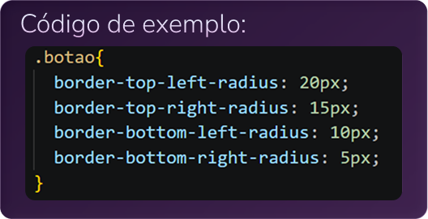
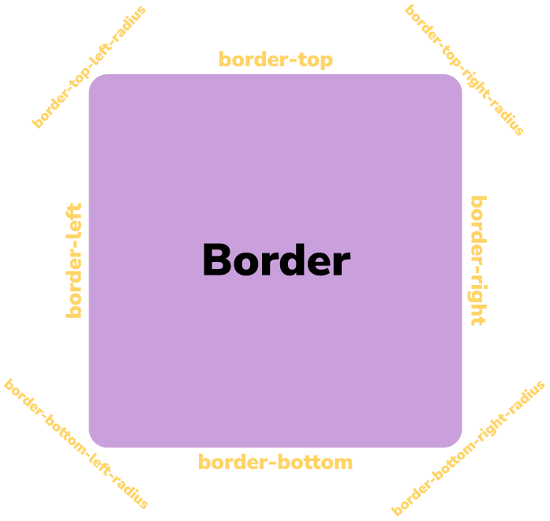

Border radius
Essa propriedade arredonda os cantos
externos da borda, você pode definir
um único raio para fazer cantos
circulares ou dois raios para fazer
cantos elípticos.
A propriedade dividida por canto é:
divisões:
• border-top-left-radius
• border-top-right-radius
• border-bottom-right-radius
• border-bottom-left-radius

